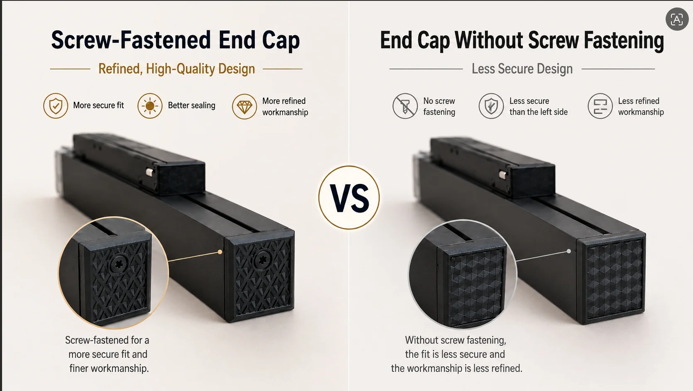

You're Probably Comparing Magnetic Track Lighting Systems Wrong — Here's What Actually Matters
338| 343| 344| 345|
346|
345|
346| Why two magnetic track lighting systems that look almost identical can perform completely differently — and how professional buyers evaluate quality before comparing prices.
347| 348| 349|A Buyer Asked Us a Simple Question
351|"Your price is about 20% higher than another supplier. Both products look almost the same. Why should I pay more?"
352|We hear this question often. And it is a reasonable question. Most magnetic track lighting systems share a similar appearance — a slim black track, minimalist luminaires, and similar advertised specifications: 48V, CRI > 80, 3000K/4000K/6000K. On paper, they seem almost identical.
353|A few months ago, one of our customers compared two 48V systems from different suppliers. The specifications looked nearly the same. The cheaper option was the obvious choice on paper.
354|Within 4 months of installation in a 48-unit retail project, 12 luminaires started flickering intermittently. Some linear modules showed visible light leakage at the end caps. Two spotlight modules no longer fit tightly on the track. Replacing the defective modules required reopening part of the ceiling — a cost that exceeded the original price difference several times over.
355|The customer initially believed these were isolated manufacturing defects. They weren't. Every issue could be traced back to engineering decisions made before production began — the same decisions that determined the price difference.
356|That experience is why this guide exists. It is not about choosing the most expensive option. It is about understanding which engineering details determine long-term quality — and which ones are invisible when you only compare prices.
357|What This Guide Will Help You Decide
360|If you are an importer, distributor, lighting designer, or project contractor, the information below will help you answer three questions before placing an order:
361|-
362|
- Which quality details actually affect long-term project cost? 363|
- How do I verify these details when evaluating samples? 364|
- What should make me pause — or walk away — when a supplier cannot provide clear answers? 365|
This is not a technical encyclopedia. It is a purchasing decision framework organized around the 10 most common mistakes buyers make when comparing magnetic track lighting systems.
368| 369| 370|📖 What You'll Learn in This Chapter
372|-
373|
- Judging Quality by Appearance Instead of Structure 374|
- Assuming Brightness Equals Quality 375|
- Comparing LED Quantity Instead of LED Layout and PCB Quality 376|
- Ignoring Optical Design Because "It's Just a Light" 377|
- Thinking Stronger Magnets Always Mean Better Quality 378|
- Overlooking the Most Common Failure Point: Electrical Contact 379|
- Treating the Power Supply as an Accessory 380|
- Asking "How Bright?" Instead of "Is It Comfortable?" 381|
- Ignoring CRI and Color Consistency Across Fixtures 382|
- Confusing Switchable CCT with True Dimming 383|
The 10 Engineering Details That Professional Buyers Never Ignore
388| 389|After evaluating hundreds of magnetic track lighting products and working with distributors, contractors, and project buyers across multiple markets, we have found that experienced buyers rarely focus on appearance alone. Instead, they evaluate these 10 engineering details:
390| 391|-
392|
- Structural Assembly & Light Leakage 393|
- Heat Dissipation & Aluminum Housing Design 394|
- LED Layout & PCB Quality 395|
- Optical Components & Anti-glare Design 396|
- Magnetic Fixing & Contact Area 397|
- Electrical Contact Reliability 398|
- Driver & Power Supply Quality 399|
- Visual Comfort & UGR 400|
- CRI & Color Consistency 401|
- Dimming & System Compatibility 402|
Each section below follows the same structure: the mistake → why it happens → how to verify → the project impact → and the warning signs that tell you whether to proceed or pause.
405| 406| 407| MISTAKE 1 408|Judging Quality by Appearance Instead of Structure
409| 410|Walk through a lighting exhibition and you will notice something: many magnetic track luminaires look remarkably similar. The housing shape, finish, and dimensions appear almost identical. Product photos make the differences even harder to spot.
411| 412|But experienced buyers know that quality is determined by what you cannot see from the outside.
413| 414|The housing of a magnetic track light is an assembly of multiple components: aluminum body, diffuser or lens, LED board, end caps, magnetic fixing components, and electrical contact assembly. These parts must fit together precisely. If manufacturing tolerances are poor, small gaps appear over time — and those gaps create bigger problems than most buyers expect.
415| 416|Buyer's Decision
418|Before comparing prices, ask the supplier:
419|-
420|
- Is the lamp body screw-fixed or clip-fixed? 421|
- How is the end cap secured? 422|
- What measures prevent light leakage from side gaps and end caps? 423|
- Can you provide internal assembly photos before the diffuser is installed? 424|
🚫 Red Flag
429|If the supplier cannot explain how the end cap is sealed, or if the housing uses clip-only assembly without screws, this is a strong indicator of low manufacturing precision. In projects where lights operate in temperature-varying environments (hotels with HVAC cycling, retail with high ceilings), clip-only assemblies develop visible light leakage and loose end caps within 6-12 months.
430|
433| 434|End cap assembly is a visible indicator of overall housing quality. A supplier that skips screws on the end cap likely uses clip-only assembly throughout the entire housing.
435| 436|📊 Project Impact
438|-
439|
- Light leakage — visible light escaping from side gaps and end caps, reducing the perceived quality of the entire installation 440|
- Loose components — modules that no longer fit tightly, requiring replacement 441|
- Higher rejection rate — in projects with strict quality standards, clip-assembled lights are more likely to be rejected during final inspection 442|
- Replacement cost — fixing structural issues after installation typically costs 3-5× the component price difference 443|
Assuming Brightness Equals Quality
451| 452|A brighter light often appears to be a better product. Many buyers compare lumens first. But brightness alone tells very little about long-term performance.
453| 454|A magnetic track light may deliver excellent brightness on day one while having poor thermal management. Six months later, the same luminaire may lose 20-30% of its initial output — a change that happens so gradually that many buyers do not notice until a side-by-side comparison reveals the gap.
455| 456|LEDs do not fail because they are switched on. They fail because they operate at excessive temperatures for extended periods. At a housing temperature of 65°C, LED lifespan drops from a rated 50,000 hours to approximately 20,000 hours — a 60% reduction.
457| 458|Aluminum thickness is only one piece of the story
459|Many suppliers advertise thicker aluminum. While housing weight matters, professionals evaluate the entire thermal system: housing weight, heat transfer path from LED board to housing, whether the PCB is aluminum-core (thermal conductivity) or standard FR4 (poor conductivity), and surface temperature under continuous operation.
460| 461|Buyer's Decision
463|When evaluating thermal design, ask:
464|-
465|
- What is the luminaire weight? (Compare similar-sized modules) 466|
- What is the surface temperature after 4 hours of continuous operation? 467|
- Is the LED board aluminum-based or FR4? 468|
- Do you have temperature rise test data? 469|
⚠️ Warning Zone
474|If the supplier quotes aluminum thickness but cannot provide temperature test data, consider this a yellow flag. For commercial projects operating 10-16 hours daily, thermal performance is directly tied to replacement cycles and warranty claims. A 1.2mm housing that runs cool may outperform a 2.0mm housing with poor thermal path design.
475|📊 Project Impact
479|-
480|
- Lumen depreciation — visible brightness loss within the first year of operation 481|
- Color shift — LEDs operating at high temperatures shift in color temperature over time 482|
- Driver stress — heat shortens driver lifespan, causing system failure 483|
- Warranty claims — inconsistent performance between luminaires leads to more service calls 484|
Comparing LED Quantity Instead of LED Layout and PCB Quality
492| 493|More LEDs do not automatically mean better quality. In fact, some suppliers crowd LEDs onto a narrow strip to create the appearance of higher brightness, while ignoring the optical and thermal consequences.
494| 495|Professional buyers look at the complete LED system: brand, layout (single-row or double-row), spacing, PCB material, and soldering quality. For linear flood modules above 10W, a double-row design with aluminum PCB is a strong indicator of better engineering consideration. Single-row layouts pushed to high wattage on FR4 PCBs create hot spots, uneven light distribution, and accelerated LED aging.
496| 497|Buyer's Decision
499|When evaluating the LED system, ask:
500|-
501|